Quince direcciones visuales con el mismo contenido. Cada una sigue un referencia (getdesign.md o motionsites.ai), adaptada a la marca (verde #1AE600 y Poppins). Todas las animaciones están hechas con código y funcionan en celular.
Editorial y de alto impacto. Fondo casi negro, verde usado con escasez, una franja verde para la cita clave y una red de ecosistema animada en la portada.
Capítulos negros alternados con cuerpo blanco. Titulares en negrita, gráficas de "ventas vs. activos", pestañas para los roles y bloques isométricos que se construyen sobre "tu propio suelo".
Secciones a pantalla completa que alternan claro y oscuro. Titulares grandes centrados, botones píldora, un globo 3D del ecosistema y frases que se encienden al hacer scroll.
Se presenta como plataforma: maqueta del panel "Mi ecosistema" con actividad en vivo, una lista de tareas "asignadas a ti" que no deja de crecer y una paleta de comandos para el primer paso.
Portada a pantalla completa estilo motionsites: franja negra con el titular y, abajo, un planeta con la red del ecosistema iluminada. Preparada para el video de key.ai (ver assets/video/LEEME.txt); mientras tanto, la escena está hecha con código.
Portada negra con video a pantalla completa y fundido en bucle (por ahora, haces de luz animados en código), UI de "vidrio líquido" y titulares en Poppins ligero. Las secciones alternan blanco editorial y negro.
Todo está partido en dos: un video propio en cada mitad del hero (por ahora, animaciones en código) y un titular que cambia de color justo en el corte. Secciones con un lado fijo y otro que avanza, alternando negro y blanco.
La página entera pasa de blanco a negro y vuelve según la sección. Esfera en una lente circular, cinta en movimiento, roles con scroll horizontal y un eclipse en el cierre (videos propios pendientes; por ahora, animaciones en código).
Hero claro con esfera de cristal atravesada por una lámina, cápsulas y panel de vidrio, cifras finas con barra diagonal (3 roles / 5 movimientos). Secciones que alternan negro y blanco.
Marco gris claro con un gran panel negro de esquinas cortadas (visor HUD en código). El titular en mayúsculas espaciadas se invierte al cruzar el panel. Tarjetas flotantes y pestañas para los pasos.
Blanco con titulares en MAYÚSCULAS muy gruesas a dos tonos, botones con chaflán y objetos 3D blancos en CSS. Los 5 movimientos como una escalera que crece.
Portada negra con cuadrícula de números, dunas y la "P" de PROMOLIDER hecha de cubos 3D. Menú "/barra", titular con línea punteada y secciones blanco/negro con textura de números.
Palabras gigantes y transiciones ligadas al scroll: una ventana de video que crece a pantalla completa, barridos circulares entre negro y blanco, frases que pasan en horizontal y se tachan, VENDER que se desvanece y CONSTRUIR que se levanta letra por letra.
El visitante es "Tú": su cursor conecta personas en el hero y con un clic suma nuevas. Roles que se exploran tocando estrellas, un primer paso que se elige y, al final, la constelación que construyó.
El lanzamiento contado como un periódico: cabecera, columnas, letra capital, foto en medio tono animada, cinta de titulares, roles como clasificados, página 8 invertida y un cupón recortable para el CTA.
La propuesta 9 "Cristal" tal cual, con las gráficas de "El cambio" de la propuesta 10 y los íconos animados de "La infraestructura" de la propuesta 3.